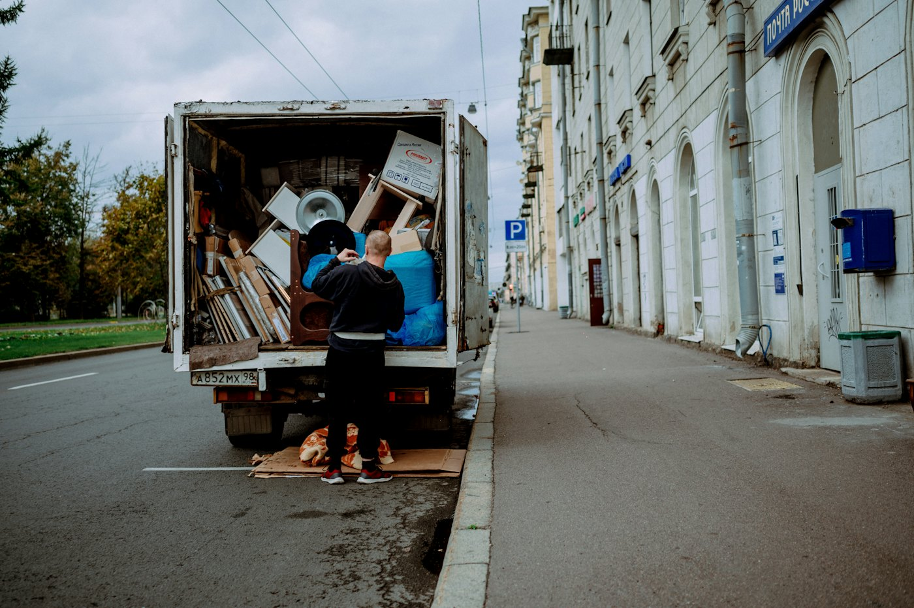
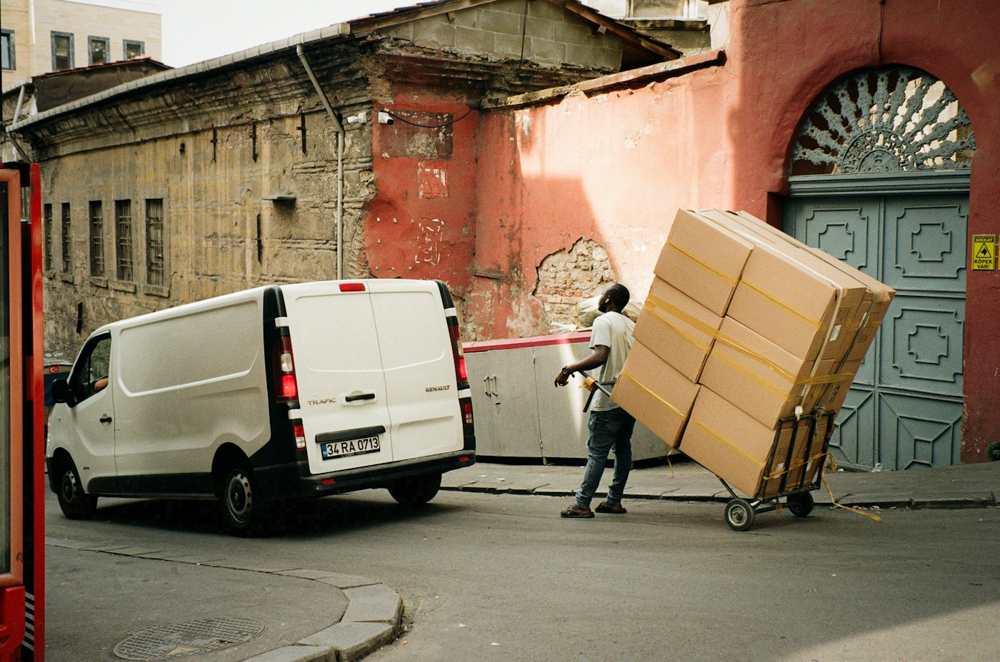
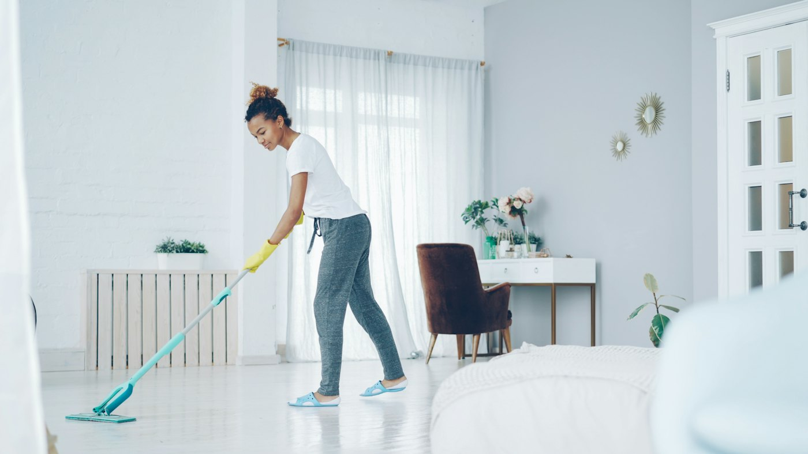
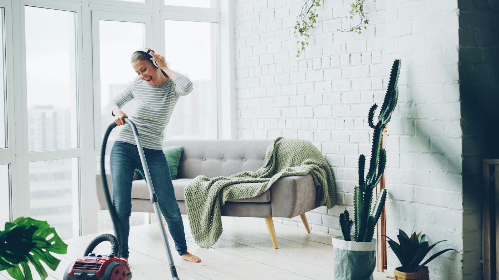
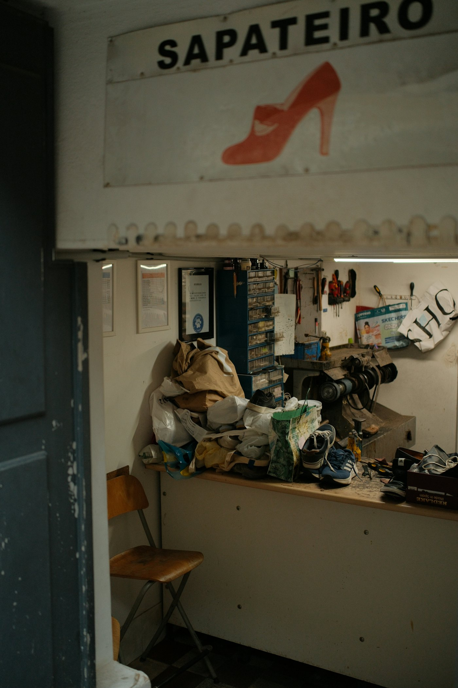

01
Mudança residencial
Casa ou apartamento, do kitnet ao sobrado. Desmontagem, transporte em caminhão baú e montagem no destino.
a partir deR$ 690
Pedir orçamentoMudanças e fretes · Santa Luzia/MG
Mudança residencial e comercial, içamento, guarda-móveis e frete pequeno. A gente embala, carrega, transporta e monta no lugar novo.
Segunda a sexta, 08h às 18h · sábado até 13h

Orçamento sem custoManda a lista dos móveis ou um vídeo da casa pelo WhatsApp.
Serviços
O valor final depende do volume, do andar e da distância. O preço abaixo é o ponto de partida; o fechado sai no orçamento.
01
Casa ou apartamento, do kitnet ao sobrado. Desmontagem, transporte em caminhão baú e montagem no destino.
a partir deR$ 690
Pedir orçamento02
Loja, escritório e consultório, com horário combinado para não parar o seu dia. Orçamento feito depois da visita.
Pedir orçamento03
Sofá, geladeira e armário que não passam na escada sobem pela janela ou sacada, com corda e cinta de carga.
a partir deR$ 450
Pedir orçamento04
Box fechado para guardar a mudança entre a saída e a entrada do imóvel novo, pelo tempo que você precisar.
a partir deR$ 280 / mês
Pedir orçamento05
Caixas, plástico bolha, cobertor nos móveis e etiqueta por ambiente. Pode ser contratado junto ou separado.
a partir deR$ 180
Pedir orçamento06
Carreto de uma peça ou de poucas caixas: compra de loja, entrega de móvel e mudança de quarto.
a partir deR$ 120
Pedir orçamentoComo funciona
Diz de onde para onde é a mudança, o andar e se tem elevador. Uma lista dos móveis ou um vídeo da casa já basta.
Pelas fotos, para mudança pequena, ou com visita sem custo em Santa Luzia e nas cidades vizinhas. O valor vai por escrito.
Data e hora combinadas, com a equipe e o caminhão reservados. Avisamos quando o caminhão sai.
Móveis desmontados e protegidos, caixas etiquetadas por ambiente e montagem no destino antes de a equipe ir embora.
Área de atendimento
Santa Luzia inteira e as cidades da região metropolitana. Mudança para outro estado a gente também faz: manda a cidade de destino que calculamos.
Manda o endereço de saída e o de chegada no WhatsApp. Se der para atender, respondemos com o valor; se não der, falamos na hora.
Perguntar no WhatsAppTrabalhos




Sobre a empresa
A Mudanças Santa Luzia é uma empresa familiar de São Benedito, na estrada desde 2011. Quem faz o orçamento é quem carrega o caminhão — não passamos o serviço para terceiro.
Trabalhamos com caminhão baú fechado, carrinho, cinta de carga e material de embalagem próprio. O orçamento sai por escrito, com o que está incluído e o que não está.
Toda Santa Luzia, Belo Horizonte e as cidades vizinhas. Para outro estado, pedimos a cidade de destino e calculamos.
Os carregadores são da casa e trabalham sempre juntos. Você sabe quem vai chegar na sua porta.
Cobertor nos móveis de madeira, plástico bolha no que é frágil e caixa etiquetada por ambiente. O material vai com a gente.
A mudança sai com seguro de transporte de carga e nota fiscal do serviço. A apólice vai anexada ao orçamento.
Horários
Mudança fora desse horário dá para combinar antes, inclusive de madrugada em prédio com regra de horário.
Telefone(31) 97528-3106
WhatsApp(31) 97528-3106